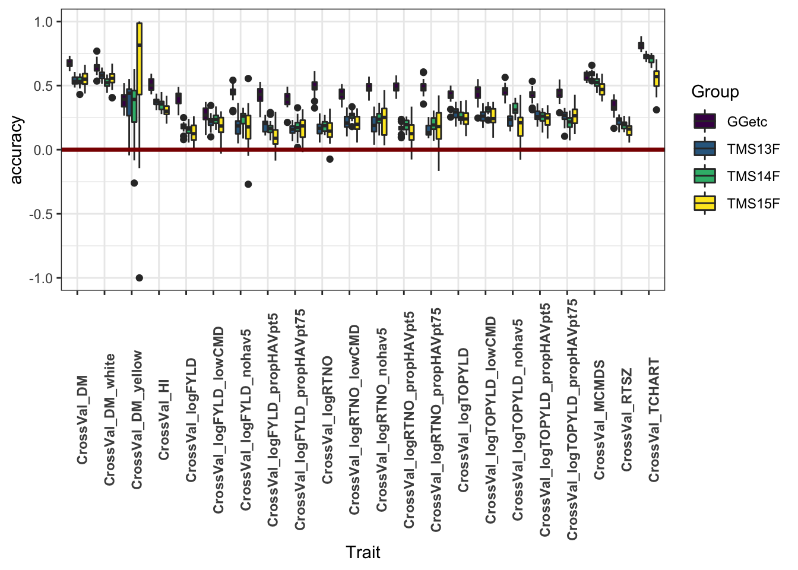
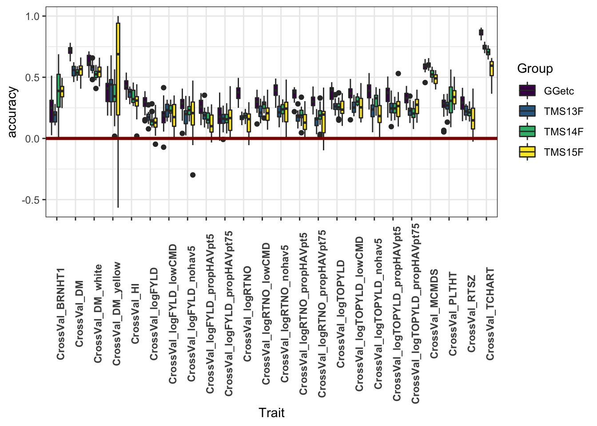
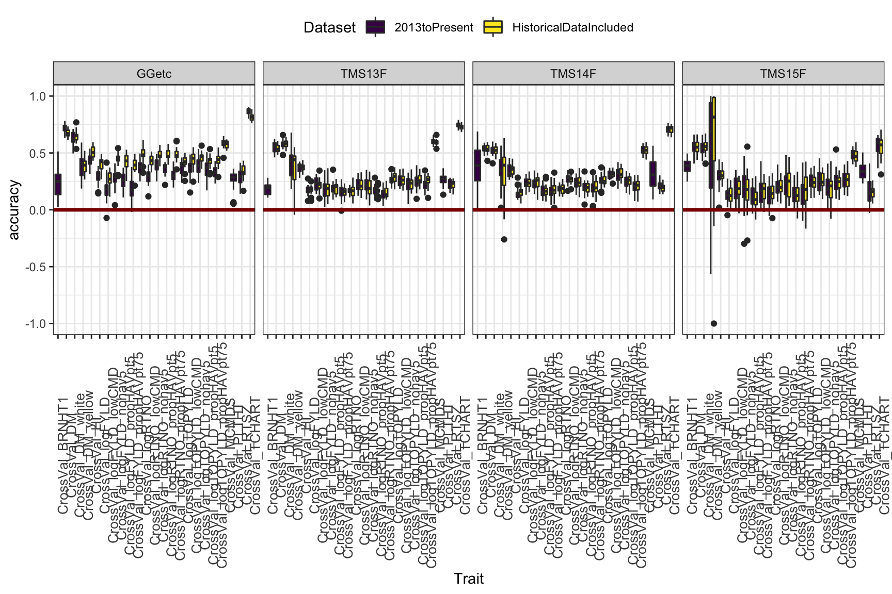
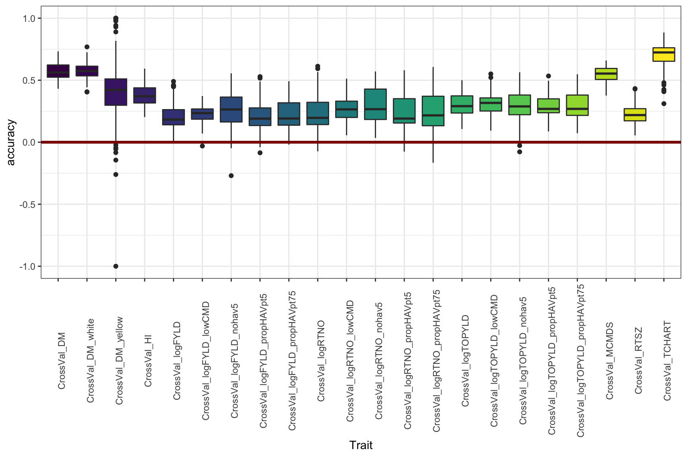
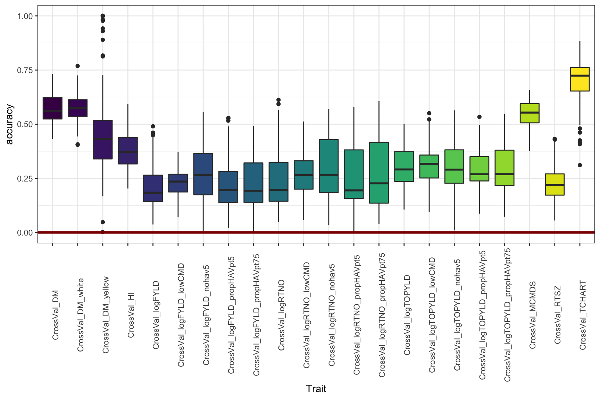

Genomic Prediction Analysis - Stage II of II: Cross-validation Round 1
wolfemd
2019-7-27
Last updated: 2020-02-13
Checks: 7 0
Knit directory: IITA_2019GS/
This reproducible R Markdown analysis was created with workflowr (version 1.5.0.9000). The Checks tab describes the reproducibility checks that were applied when the results were created. The Past versions tab lists the development history.
Great! Since the R Markdown file has been committed to the Git repository, you know the exact version of the code that produced these results.
Great job! The global environment was empty. Objects defined in the global environment can affect the analysis in your R Markdown file in unknown ways. For reproduciblity it’s best to always run the code in an empty environment.
The command set.seed(20191121) was run prior to running the code in the R Markdown file. Setting a seed ensures that any results that rely on randomness, e.g. subsampling or permutations, are reproducible.
Great job! Recording the operating system, R version, and package versions is critical for reproducibility.
Nice! There were no cached chunks for this analysis, so you can be confident that you successfully produced the results during this run.
Great job! Using relative paths to the files within your workflowr project makes it easier to run your code on other machines.
Great! You are using Git for version control. Tracking code development and connecting the code version to the results is critical for reproducibility. The version displayed above was the version of the Git repository at the time these results were generated.
Note that you need to be careful to ensure that all relevant files for the analysis have been committed to Git prior to generating the results (you can use wflow_publish or wflow_git_commit). workflowr only checks the R Markdown file, but you know if there are other scripts or data files that it depends on. Below is the status of the Git repository when the results were generated:
Ignored files:
Ignored: .DS_Store
Ignored: .Rhistory
Ignored: .Rproj.user/
Ignored: data/.DS_Store
Ignored: output/.DS_Store
Untracked files:
Untracked: workflowr_log.R
Note that any generated files, e.g. HTML, png, CSS, etc., are not included in this status report because it is ok for generated content to have uncommitted changes.
These are the previous versions of the R Markdown and HTML files. If you’ve configured a remote Git repository (see ?wflow_git_remote), click on the hyperlinks in the table below to view them.
| File | Version | Author | Date | Message |
|---|---|---|---|---|
| Rmd | 3a93083 | wolfemd | 2020-02-13 | Add / fix navigation links and misc |
| html | cb61b89 | wolfemd | 2019-11-21 | Build site. |
| html | 70242a6 | wolfemd | 2019-11-21 | Build site. |
| html | dacbcf9 | wolfemd | 2019-11-21 | Build site. |
| html | 43e9d5d | wolfemd | 2019-11-21 | Build site. |
| html | a869b9e | wolfemd | 2019-11-21 | Build site. |
| Rmd | bfffb51 | wolfemd | 2019-11-21 | Publish the first set of analyses and files for IITA 2019 GS, |
Objective
Two training datasets versions:
- studyYear>2012
- allYears
Using newly imputed DArT+GBS sites to construct kinship.
Cross-validate the entire TP for Ismail’s desired traits. Isolate sets of folds within different chunks of the TP:
- GG, TMS13, TMS14, TMS15, TMS18 (Ikenne CET only)
See code below and a diagram in the results section below that for more detail.

Cross-validation scheme
Make a kinship matrix
Read and process dosages
library(tidyverse); library(magrittr); library(furrr); library(data.table)
options(mc.cores=18)
plan(multiprocess)
snps<-tibble(Chr=1:18) %>%
mutate(raw=future_pmap(.,function(Chr,...){
# NOTE: The filepath here directs to a directory on cbsurobbins.biohpc.cornell.edu
# It is too big to put on GitHub
# To do list is to figure out best-practice for sharing
filename<-paste0("/workdir/marnin/nextgenImputation2019/ImputationStageII_71219/chr",Chr,
"_ImputationReferencePanel_StageIIpartI_72219.raw")
snps<-fread(filename,
stringsAsFactors = F) %>%
as_tibble
return(snps) }))
# BLUPs pre-outlier removal
asModelsFit<-readRDS(file="data/iita_blupsForCrossVal_72619.rds")
clonesWithBLUPs<-asModelsFit %>% unnest(blups) %$% unique(GID)Subset to clones with BLUPs only.
snps %<>%
mutate(raw=map(raw,function(raw){
out<-raw %>%
as.data.frame %>%
column_to_rownames(var = "IID") %>%
dplyr::select(-FID,-PAT,-MAT,-SEX,-PHENOTYPE) %>%
as.matrix %>%
.[rownames(.) %in% clonesWithBLUPs,];
return(out) }))Concatenate per-chromosome dosage matrices.
Subset the BLUPs to genotyped-clones only.
MAF>1% filter
Remove SNPs with minor allele frequency (MAF) less than 0.01
maf_filter<-function(snps,thresh){
freq<-colMeans(snps, na.rm=T)/2; maf<-freq;
maf[which(maf > 0.5)]<-1-maf[which(maf > 0.5)]
snps1<-snps[,which(maf>thresh)];
return(snps1) }
snps %<>% maf_filter(.,0.01)
dim(snps) # [1] 6629 82992Save filtered dosage matrix for future purposes.
Note filepath is to a non-public location, for the time being.
Set-up training data
rm(list=ls()); gc()
library(tidyverse); library(magrittr);
blups<-readRDS(file="data/iita_blupsForCrossVal_72619.rds")
K<-readRDS(file=paste0("/workdir/IITA_2019GS/Kinship_IITA_TrainingPop_72619.rds"))
blups %<>%
rename(trainingData=blups) %>%
mutate(trainingData=map(trainingData,~filter(.,GID %in% rownames(K))))
tms13f<-rownames(K) %>% grep("TMS13F|2013_",.,value = T); length(tms13f) # 2395
tms14f<-rownames(K) %>% grep("TMS14F",.,value = T); length(tms14f) # 2171
tms15f<-rownames(K) %>% grep("TMS15F",.,value = T); length(tms15f) # 835
gg<-setdiff(rownames(K),c(tms13f,tms14f,tms15f)); length(gg) # 1228 (not strictly gg)
blups %<>%
mutate(seed_of_seeds=1:n(),
seeds=map(seed_of_seeds,function(seed_of_seeds,reps=5){
set.seed(seed_of_seeds);
outSeeds<-sample(1:1000,size = reps,replace = F);
return(outSeeds) }))
blups %<>%
select(-varcomp); gc()Create an directory for the output
Cross-validation function
The version write output to disk to save RAM
For each Trait-Dataset combination, run 5 reps of 5-fold cross-validation.
# trainingData<-blups$trainingData[[1]]; seeds<-blups$seeds[[1]]; nfolds<-5; reps<-5;
crossValidateFunc<-function(Trait,Dataset,trainingData,seeds,nfolds=5,reps=5,ncores=40,...){
trntstdata<-trainingData %>%
filter(GID %in% rownames(K))
K1<-K[rownames(K) %in% trntstdata$GID,
rownames(K) %in% trntstdata$GID]
rm(K,trainingData); gc()
# seed<-seeds[[1]]
# Nfolds=nfolds
makeFolds<-function(Nfolds=nfolds,seed){
genotypes<-rownames(K1)
set.seed(seed)
seed_per_group<-sample(1:10000,size = 4,replace = FALSE)
set.seed(seed_per_group[1])
FoldsThisRep_tms15<-tibble(CLONE=genotypes[genotypes %in% tms15f],
Group="TMS15F") %>%
mutate(Folds=sample(1:Nfolds,nrow(.),replace=T)) %>%
arrange(Folds) %>%
group_by(Group,Folds) %>%
nest(.key = Test)
set.seed(seed_per_group[2])
FoldsThisRep_tms14<-tibble(CLONE=genotypes[genotypes %in% tms14f],
Group="TMS14F") %>%
mutate(Folds=sample(1:Nfolds,nrow(.),replace=T)) %>%
arrange(Folds) %>%
group_by(Group,Folds) %>%
nest(.key = Test)
set.seed(seed_per_group[3])
FoldsThisRep_tms13<-tibble(CLONE=genotypes[genotypes %in% tms13f],
Group="TMS13F") %>%
mutate(Folds=sample(1:Nfolds,nrow(.),replace=T)) %>%
arrange(Folds) %>%
group_by(Group,Folds) %>%
nest(.key = Test)
set.seed(seed_per_group[4])
FoldsThisRep_gg<-tibble(CLONE=genotypes[genotypes %in% gg],
Group="GGetc") %>%
mutate(Folds=sample(1:Nfolds,nrow(.),replace=T)) %>%
arrange(Folds) %>%
group_by(Group,Folds) %>%
nest(.key = Test)
FoldsThisRep<-bind_rows(FoldsThisRep_tms15,FoldsThisRep_tms14) %>%
bind_rows(FoldsThisRep_tms13) %>%
bind_rows(FoldsThisRep_gg) %>%
mutate(Test=map(Test,~.$CLONE),
Train=map(Test,~genotypes[!genotypes %in% .]))
return(FoldsThisRep) }
crossval<-tibble(Rep=1:reps,seed=unlist(seeds)) %>%
mutate(Folds=map2(Rep,seed,~makeFolds(Nfolds=nfolds,seed=.y))) %>%
unnest()
#Test<-crossval$Test[[1]]; Train<-crossval$Train[[1]]
crossValidate<-function(Test,Train){
train<-Train
test<-Test
trainingdata<-trntstdata %>%
filter(GID %in% train) %>%
mutate(GID=factor(GID,levels=rownames(K1)))
require(sommer)
proctime<-proc.time()
fit <- mmer(fixed = drgBLUP ~1,
random = ~vs(GID,Gu=K1),
weights = WT,
data=trainingdata)
proc.time()-proctime
x<-fit$U$`u:GID`$drgBLUP
gebvs<-tibble(GID=names(x),
GEBV=as.numeric(x))
accuracy<-gebvs %>%
filter(GID %in% test) %>%
left_join(
trntstdata %>%
dplyr::select(GID,BLUP) %>%
filter(GID %in% test)) %$%
cor(GEBV,BLUP, use='complete.obs')
return(accuracy)
}
require(furrr)
options(mc.cores=ncores)
plan(multiprocess)
crossval<-crossval %>%
mutate(accuracy=future_map2(Test,Train,~crossValidate(Test=.x,Train=.y)))
saveRDS(crossval,file=paste0("output/CrossVal_72719/",
"CrossVal_",Trait,"_",Dataset,"_72719.rds"))
rm(list=ls()); gc()
}Run CV on two servers
Results
#rm(list=ls());gc()
library(tidyverse);
library(magrittr);
library(cowplot);
files<-list.files("output/CrossVal_72719/")
pathway<-"output/CrossVal_72719/"
cv<-tibble(Files=files) %>%
mutate(cvResults=map(Files,~readRDS(paste0(pathway,.))))
cv %<>%
mutate(Files=gsub(pathway,"",Files),
Files=gsub("_72719.rds","",Files),
Dataset=ifelse(grepl("2013toPresent",Files),"2013toPresent","HistoricalDataIncluded"),
Files=gsub("_2013toPresent","",Files),
Files=gsub("_HistoricalDataIncluded","",Files)) %>%
rename(Trait=Files) %>%
unnest(cols = cvResults) %>%
mutate(Ntrain=map_dbl(Train,~length(.)),
Ntest=map_dbl(Test,~length(.))) %>%
select(-Test,-Train) %>%
unnest(cols = accuracy)Figure 1
This plot shows only the analyses with all historical data included. It aims to compare the accuracy within each genetic group.
library(viridis)
cv %>% filter(Dataset=="HistoricalDataIncluded") %>%
ggplot(.,aes(x=Trait,y=accuracy,fill=Group)) +
geom_boxplot() +
#facet_wrap(~Group,nrow=1) +
geom_hline(yintercept = 0,color='darkred',size=1.25) +
theme_bw() +
theme(axis.text.x = element_text(angle=90,face='bold')) +
scale_fill_viridis_d()
| Version | Author | Date |
|---|---|---|
| a869b9e | wolfemd | 2019-11-21 |
Figure 2
This plot shows only the analyses excluding historical data
library(viridis)
cv %>% filter(Dataset!="HistoricalDataIncluded") %>%
ggplot(.,aes(x=Trait,y=accuracy,fill=Group)) +
geom_boxplot() +
#facet_wrap(~Group,nrow=1) +
geom_hline(yintercept = 0,color='darkred',size=1.25) +
theme_bw() +
theme(axis.text.x = element_text(angle=90,face='bold')) +
scale_fill_viridis_d()
| Version | Author | Date |
|---|---|---|
| a869b9e | wolfemd | 2019-11-21 |
Figure 3
This plot aims to compare training on all historical-included to using only 2013toPresent data. Though the advantage is not huge, I see a small benefit or no cost to including historical data. Thoughts? One thing to note: You can see that the advantage of historical data is, not suprisingly, most sig. in the Genetic Gain. Phenotyping your clones continuously for 20 years works.
library(viridis)
cv %>%
ggplot(.,aes(x=Trait,y=accuracy,fill=Dataset)) +
geom_boxplot() +
facet_wrap(~Group,nrow=1) +
geom_hline(yintercept = 0,color='darkred',size=1.25) +
theme_bw() +
theme(axis.text.x = element_text(angle=90,size = 10),
legend.position = "top") +
scale_fill_viridis_d()
| Version | Author | Date |
|---|---|---|
| a869b9e | wolfemd | 2019-11-21 |
Figure 4
Or again, if you don’t want to compare the genetic groups, this is just lumping everything per trait, historical data-included.
library(viridis)
cv %>% filter(Dataset=="HistoricalDataIncluded") %>%
ggplot(.,aes(x=Trait,y=accuracy,fill=Trait)) +
geom_boxplot() +
#facet_wrap(~Group,nrow=1) +
geom_hline(yintercept = 0,color='darkred',size=1.25) +
theme_bw() +
theme(axis.text.x = element_text(angle=90),
legend.position = 'none') +
scale_fill_viridis_d()
| Version | Author | Date |
|---|---|---|
| a869b9e | wolfemd | 2019-11-21 |
Figure 5
Adjust the y-limit from Figure 4
library(viridis)
cv %>% filter(Dataset=="HistoricalDataIncluded") %>%
ggplot(.,aes(x=Trait,y=accuracy,fill=Trait)) +
geom_boxplot() +
#facet_wrap(~Group,nrow=1) +
geom_hline(yintercept = 0,color='darkred',size=1.25) +
theme_bw() +
theme(axis.text.x = element_text(angle=90),
legend.position = 'none') + lims(y=c(0,1)) +
scale_fill_viridis_d()
| Version | Author | Date |
|---|---|---|
| a869b9e | wolfemd | 2019-11-21 |
Next step
Stage II: Cross-validation Run 2
R version 3.6.1 (2019-07-05)
Platform: x86_64-apple-darwin15.6.0 (64-bit)
Running under: macOS Mojave 10.14.6
Matrix products: default
BLAS: /Library/Frameworks/R.framework/Versions/3.6/Resources/lib/libRblas.0.dylib
LAPACK: /Library/Frameworks/R.framework/Versions/3.6/Resources/lib/libRlapack.dylib
locale:
[1] en_US.UTF-8/en_US.UTF-8/en_US.UTF-8/C/en_US.UTF-8/en_US.UTF-8
attached base packages:
[1] stats graphics grDevices utils datasets methods base
other attached packages:
[1] viridis_0.5.1 viridisLite_0.3.0 cowplot_1.0.0 magrittr_1.5
[5] forcats_0.4.0 stringr_1.4.0 dplyr_0.8.3 purrr_0.3.3
[9] readr_1.3.1 tidyr_1.0.0 tibble_2.1.3 ggplot2_3.2.1
[13] tidyverse_1.2.1
loaded via a namespace (and not attached):
[1] tidyselect_0.2.5 xfun_0.11 haven_2.2.0
[4] lattice_0.20-38 colorspace_1.4-1 vctrs_0.2.0
[7] generics_0.0.2 htmltools_0.4.0 yaml_2.2.0
[10] rlang_0.4.1 later_1.0.0 pillar_1.4.2
[13] withr_2.1.2 glue_1.3.1 modelr_0.1.5
[16] readxl_1.3.1 lifecycle_0.1.0 munsell_0.5.0
[19] gtable_0.3.0 workflowr_1.5.0.9000 cellranger_1.1.0
[22] rvest_0.3.5 evaluate_0.14 labeling_0.3
[25] knitr_1.26 httpuv_1.5.2 broom_0.5.2
[28] Rcpp_1.0.3 promises_1.1.0 backports_1.1.5
[31] scales_1.1.0 jsonlite_1.6 farver_2.0.1
[34] fs_1.3.1 gridExtra_2.3 hms_0.5.2
[37] digest_0.6.22 stringi_1.4.3 grid_3.6.1
[40] rprojroot_1.3-2 cli_1.1.0 tools_3.6.1
[43] lazyeval_0.2.2 crayon_1.3.4 whisker_0.4
[46] pkgconfig_2.0.3 zeallot_0.1.0 xml2_1.2.2
[49] lubridate_1.7.4 assertthat_0.2.1 rmarkdown_1.17
[52] httr_1.4.1 rstudioapi_0.10 R6_2.4.1
[55] nlme_3.1-142 git2r_0.26.1 compiler_3.6.1